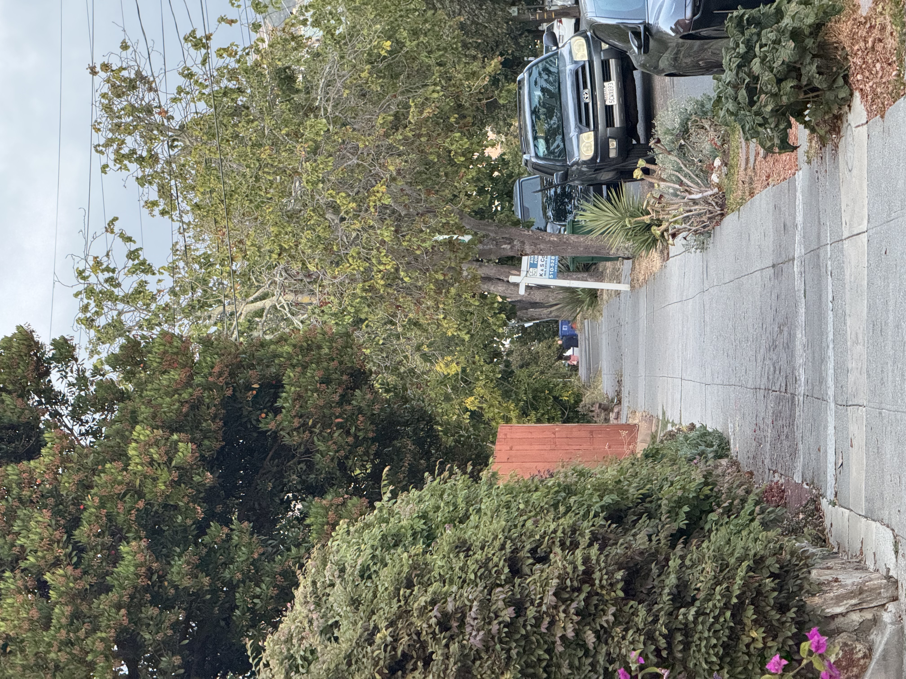
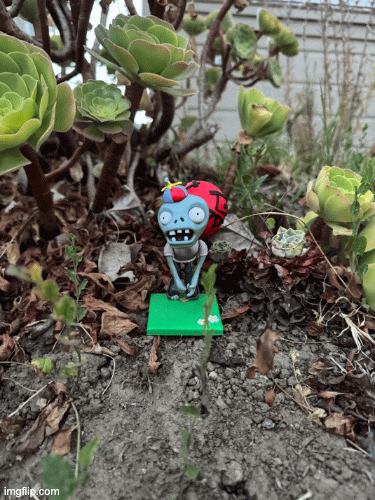

Part 1: Selfie: The Wrong Way vs. The Right Way
Close-up
Stepped back and zoomed in
Part 2: Architectural Perspective Compression

Zoomed In

No Zoom
Part 3: The Dolly Zoom

Animated GIF of my Dolly Zoom